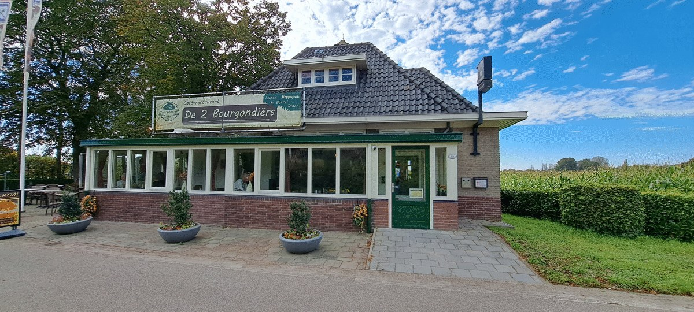
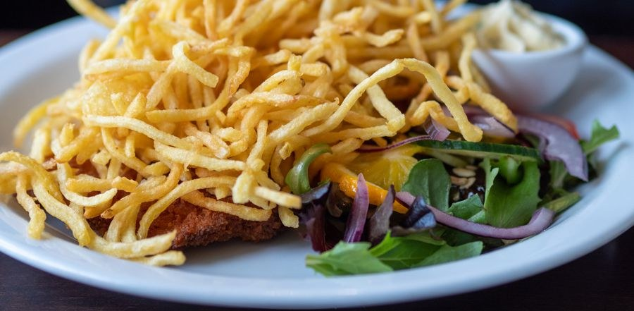
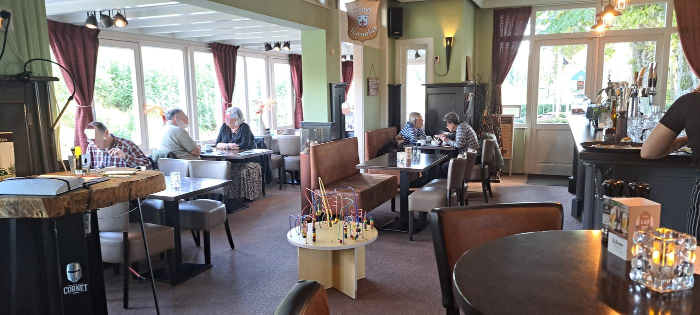
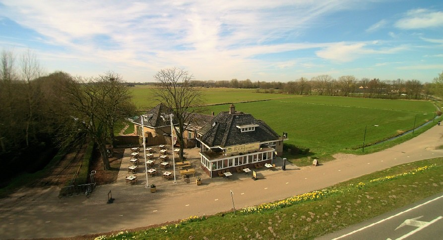
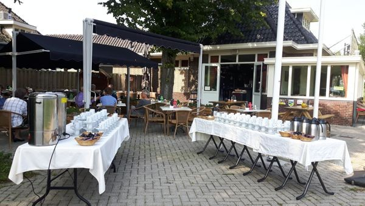
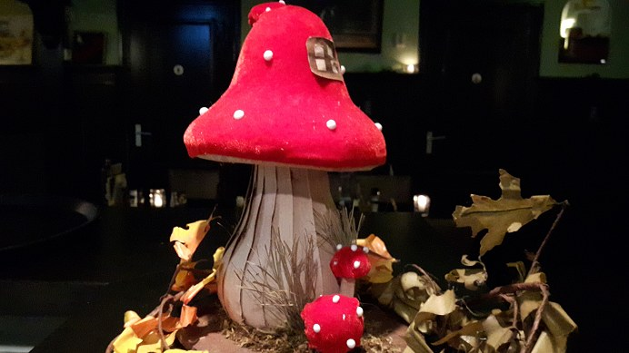
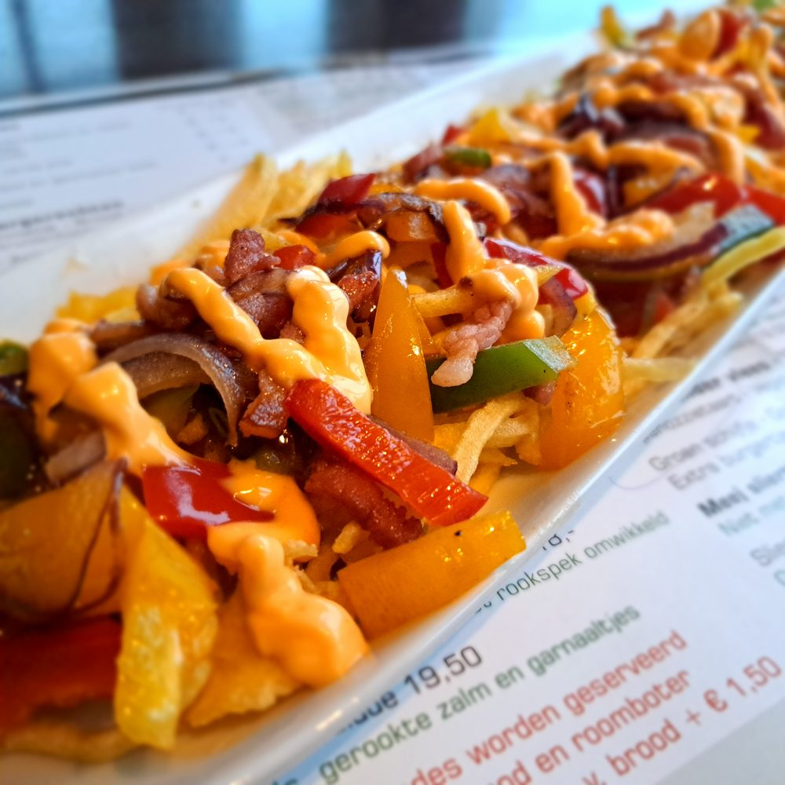

Gewoon, lekker eten in Hilvarenbeek
Ons café-restaurant ligt tussen de velden aan de Tilburgseweg. Brabantse gerechten en de originele Steppegras®, gastvrij en zeker niet te duur.

Elk hoofdgerecht als Steppegras®-schotel
Kies je favoriete hoofdgerecht van de avondkaart. Daar gaat de originele Steppegrassaus® overheen, die een beetje lijkt op stroganoffsaus. Bovenop komt een berg superdunne frietjes, met een schijfje citroen en een sla-garnituurtje.
Liever een andere saus? Dat kan gewoon.
Kerst bij De 2 Bourgondiërs
Beide kerstdagen zijn we open vanaf 16.00 uur. Geen vast kerstmenu: je kiest gewoon van de avondkaart, zodat je kerstdiner lekker betaalbaar blijft.
Kerstdiner reserveren
Het loopt vaak snel vol met kerstreserveringen. Wil je zeker zijn van een plekje, reserveer dan op tijd.
- Kerstavond (24 dec)gesloten
- 1e Kerstdag (25 dec)16.00 - 22.00
- 2e Kerstdag (26 dec)16.00 - 22.00
- Per gezelschapmax. 7 personen
Een cadeaubon geven
Een cadeau dat altijd in de smaak valt. We schrijven de cadeaubon uit voor elk bedrag dat je wilt.
Binnen de openingstijden kun je altijd binnenlopen om hem op te halen.
Bekijk de openingstijdenMet Kerst serveren we geen Steppegras®.
Een kijkje bij ons
Een landelijke plek aan de rand van Hilvarenbeek, met een eigen terras.





Twee Bourgondiërs, een klein team
Gewoon, lekker eten!
Chefkok en medebourgondiër Nicolle staat zelf in de keuken. Daarom hebben we bewust gekozen om het klein te houden: een kleiner terras, achterin een gezellige loungehoek en maximaal 7 personen per gezelschap.
Zo blijft er tijd voor een vlotte service en ouderwetse gastvrijheid. In het weekend zitten we sneller vol, dus kom ook eens door de week.
Reserveren
Bel of app ons. Op drukke momenten staan we allemaal op de vloer en lezen we berichten niet altijd meteen: dan is bellen beter.
Bel of app ons
Openingstijden
- Donderdag16.00 - 21.30
- Vrijdag16.00 - 22.00
- Zaterdag14.00 - 22.00
- Zon- en feestdagen14.00 - 21.30
Voor het diner kun je tot ongeveer 19.45 uur binnenkomen. Gesloten van 31 december t/m 14 januari.